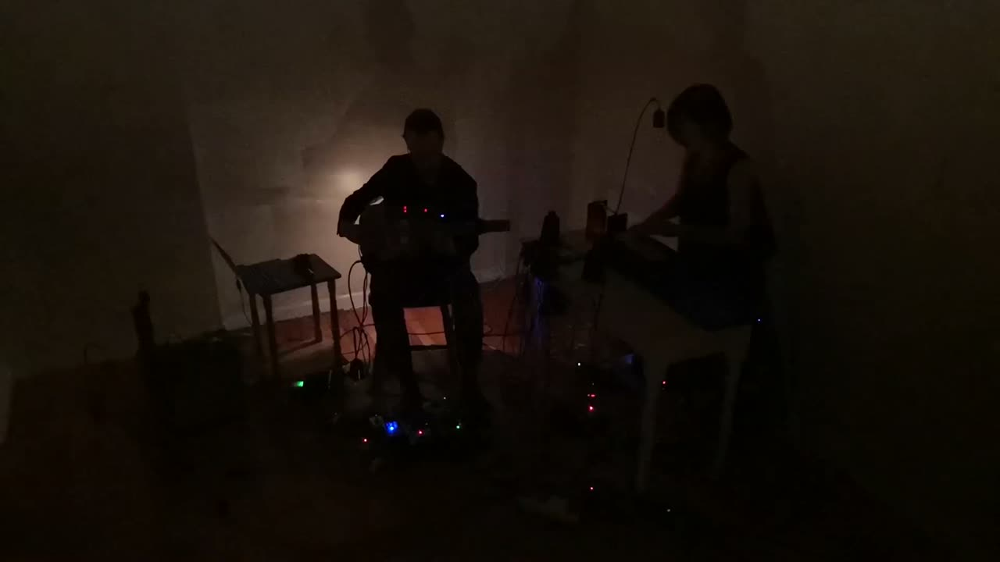

Transsonic
PROJECT DESCRIPTION
Transsonic is a duo project of Viola Yip and Nicola L. Hein who are both sound artists and performers. The project aims to develop new performative site-specific works that communicate an intermedial conception of music. Recently, they have been exploring the rich nexus between light and sound, which they consider as equally important and yet dialectical musical counterpoints that enrich musical experience.
To develop a tight conversation between sound and light, between the two performers, they have developed their respective interfaces and controllers. Viola Yip uses a touch-sensitive DIY interface, via copper tape and arduino, that translates her imagination to tactile sensation, signals, and eventually relays, which create analog mechanical sounds as well as closing and opening the circuits of an array of lightbulbs. The mechanical relays are used as square waves oscillators, while the changing of electric current is picked up by an electromagnetic guitar pick-up, transmitted and processed through the electric guitar circuit. Nicola L. Hein uses a machine-learning-based Max/MSP patch that learns the sonic language of Nicola L. Hein in real time. The patch performs frequency analysis based multi-channel audio spatialization and acts as a musically autonomous agent. The software does, based on mel-frequency and knn analysis, learn the playing and interaction guitar and light bulbs and answers/interacts with the learned audio material. Furthermore, a knn-analysis controlled, audio-corpus based synthesis process forms a site of contextual resonance, letting the sound of the light bulbs resonate in myriad grains of guitar sound and vice versa.
The two performers play together in real time, creating a multi-sensorial performance that bridges the digital and analog, as well as the auditive and the visual.
The duo has been commissioned by Hong Kong New Music Ensemble and Gray Center for Arts and Inquiry at the University of Chicago. Furthermore, they have presented at New York University, Infrequent Seams Festival, Internationales Musikinstitut Darmstadt, Sonic Lab in SARC at Queen's University Belfast, Huddersfield, Royal Northern College of Music in Manchester, Klex Festival in Kuala Lumpur, Alte Feuerwache Köln and many other places.
For NIME 2021 we want to realise a 15 minute, telematic streaming performance that transforms our performance concept into the telematic medium.
PROGRAM NOTES
Transsonic is a intermedia project of Viola Yip and Nicola L. Hein and aims to develop new site-specific works that communicate intermedial conceptions of music consisting of site-specific light installations, electric guitar, multichannel live electronics and relays working as oscillators. The project centers around the development of “light as musical material” and questions the ontology of music from this intermedial perspective. In light of the ongoing digital revolution we develop translational potentials of electronic and digital media to develop our working concept of music across different media.
By using guitar pickups that microphone the changes in electricity used to control the flickering of the lights by placing them amongst the electricity carrying cables, introducing the sharp clicking sound of 220 Volts lighting up the lightbulbs of Viola Yip’s lightbulb instrument. These sounds are picked up and transformed by the guitar pickups instantly being sent through the line of guitar effects and live-electronics written in Max/MSP for Nicola Hein’s multichannel electronic set up thus sonically fusing both instruments.
Both, the sound of the light bulbs and the electric guitar are, in real time, fed into a machine learning based Max/MSP patch which performs frequency analysis based multi channel audio spatialisation and acts as a musically autonomous agent. The software does, in real time based on mel-frequency and knn analysis, learn the playing and interaction style of guitar and light bulbs and answers/interacts with the learned audio material. On the other hand, a knn-analysis controlled, audio-corpus based synthesis process forms a site of contextual resonance, lets the sound of the light bulbs resonate in myriad grains of guitar sound and vice versa.
With its 15 minute telematic performance, Transsonic explores the rich nexus between light and sound, that sees both as equally important and yet dialectical musical counterpoints that enrich our musical experience.
PERFORMANCE REQUIREMENTS
N/A (telematic)
We will be doing the telematic performance from our own studio.
Thus we do not need any tech support.
We only do need NIME to upload the video of our performance or provide a frame for a telematic performance. Our internet connection at our studio is steady enought to ensure the possibility of a telematic performance. We will not be able to travel to Shanghai in June because of the COVID-19 pandemic and thus would want to participate via Internet.
MEDIA

▶ACKNOWLEDGEMENTS
This iteration of Transsonic is commissioned and supported by the Richard and Mary L. Gray Center for Arts and Inquiry at the University of Chicago.